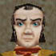
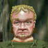

's Farm. We grow nothing but the finest vegetables in our field.
We even manage to harvest the mystic Jumjum Stalk in our fields.
Karana has blessed us indeed.
|  | Fiddy Bobick | キーワード ▼ |
|
Fiddy Bobick says 'Ahoy mate!! The name's Fiddy Bobick. Perhaps you've heard of me. The greatest halfling to sail the seas of Norrath. I have been to the north, south, east and west and thank Prexus I have survived it all. Why I have returned to this little hollow is a wonder to me. Obviously the salty air finally got to my brain. | ||
| Fiddy Bobick 「おおい、友よ！！ おれの名は Fiddy Bobick。 聞いたことがあるだろ。Norrath の大海を航海するもっとも偉大なる ｈａｌｆｌｉｎｇ、それがおれだ。おれは北から南から東から西から全部 行ったよ。それでもって全部を生き抜いてきたのはＰｒｅｘｕｓのおかげだ。 どうやってこのちっぽけな谷に戻ってこれたのか、いやはや 不思議なもんだ。塩っ辛い海風がおれの脳みそまで達したのが はっきりしてるやね。 | ||
| すいません、最後の行の訳かなりあやふやです（＾＾； ちなみに「Ahoy」ってのは、 船乗りが使う、他の船に対する呼びかけなのだそうです。さすが海の男。 | ||
|
Daleen Leafway | |
|
Daleen Leafway says 'Greetings Shriast. Welcomt to Tagglefoot 's Farm. We grow nothing but the finest vegetables in our field. We even manage to harvest the mystic Jumjum Stalk in our fields. Karana has blessed us indeed. | ||
| Daleen Leafway 「こんにちはShriast。Tagglefootの農場へようこそ。 私たちの畑で育てているのは、最高の野菜以外の何物でもないわ。 それだけじゃなくって、秘伝のJumjumの茎の収穫までこの農場で やっているの。Karanaは本当に私たちを祝福してくれているわ。 | ||
| Ilscent Tagglefoot | キーワード ▼ |
|
|
Ilscent Tagglefoot says 'Oh hello Shriast. My name is Ilscent. I am grad to see you, but I am in a bit of a [bind] right now. | ||
| Ilscent Tagglefoot 「おお、こんにちはShriast。私はIlcentという者だ。 会えてうれしいよ。しかし今、私はちょっとした [束縛ごと] があってね。 | ||
| Torth Largefoot |
| Bumpy Quickfinger |
|
Hibbs Tootenpaw |
|  | a shady halfling | |
| 「shady」の意味は、「陰の多い、薄暗い、うさんくさい」・・・だそうです。そう言われると そりゃもうものすごくうさんくさいんですが・・・（笑） | ||